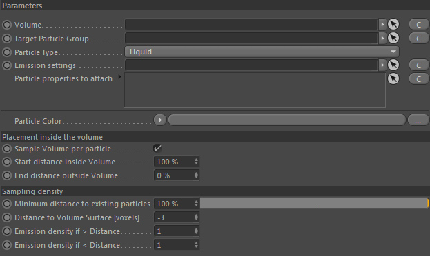
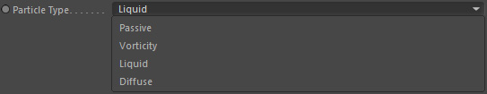
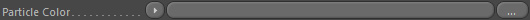
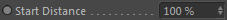
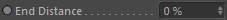
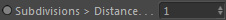
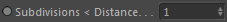

Parameters
Constraints
Parameters

Volume

Takes a Volume to define the area in space where the emitter is allowed to emit particles.
Target Particle Group

Link the Particle Group which should take the generated particles.
Particle Type

Defines the particle type to generate.
Emission Settings

Link Particle Emission Settings in here that define the emission behavior.
Particle properties to attach

The emitter will attach any particle property you assign here to each generated/emitted particle.
Note:
Remember that each particle automatically gets a Position and a Velocity property attached, so it's not necessary to drop them here.
If you do drop a velocity property here, it will initialise born particles with its start value.
Remember that each particle automatically gets a Position and a Velocity property attached, so it's not necessary to drop them here.
If you do drop a velocity property here, it will initialise born particles with its start value.
Particle Color

Here you can assign a color to the emitted particles by using a channel shader of your choice.
As particles are generated in mid-air there are no UV coordinates available so the shader can only work in 3D (or any projected) space.
Note: You need to attach a color property for this to have an effect. See Particle properties to attach.
Parameters::Placement inside the Volume
Sample Volume per particle
As the emission is based on a grid, the spatial emission check operates on each cell.
Particles are however emitted in a subgrid fashion and the check if the emitted particle is inside the given Volume happens in this subgrid
if activated. Otherwise it will only check once if the cell itself is in the volume (which is faster but results in a voxelized appearance).
Start Distance

Allows to constraint the emission to a certain area inside the used volume.
The inside always has a finite maximum distance (remember the volume is represented as a signed distance field)
and therefore 100% means all the inside volume.
The lower this value the more the inside volume area shrinks towards the volume's surface.
End Distance

Allows to constraint the emission to a certain area outside the used volume (make sure the Volume's 'Outside Extent' value is high enough)..
The inside always has a finite maximum distance (remember the volume is represented as a signed distance field)
and therefore 100% means all the inside volume.
Values lower 0% will shrink the volume from the surface towards the most distant inside
while (-100% means all the volume is gone).
Values higher than 0% will expand the volume from the surface towards the outside. This is especially
useful to create particles near the surface if the volume is an obstacle at the same time (and you don't want
particles inside the obstacle anyway).
Parameters::Sampling Density
Minimum distance to existing particles
Defines the minimum distance to existing particles. Avoids particles
to be generated where there are already particles near the emission location.
The default is 100% which means half a voxel. This is the optimal particle density (resulting in 8 particles per cell for standard FLIP liquid simulations).
Distance to Volume Surface [voxels]

This is the reference distance for the following two settings 'Subdivisions..'.
Defines a distance from the volume's surface.
Emission density if > Distance

You can subdivide a grid cell to create more (or less) particles if the cell is further away than given by the 'Distance to Surface' value.
Emission density if < Distance

You can subdivide a grid cell to create more (or less) particles if the cell is nearer than given by the 'Distance to Surface' value.